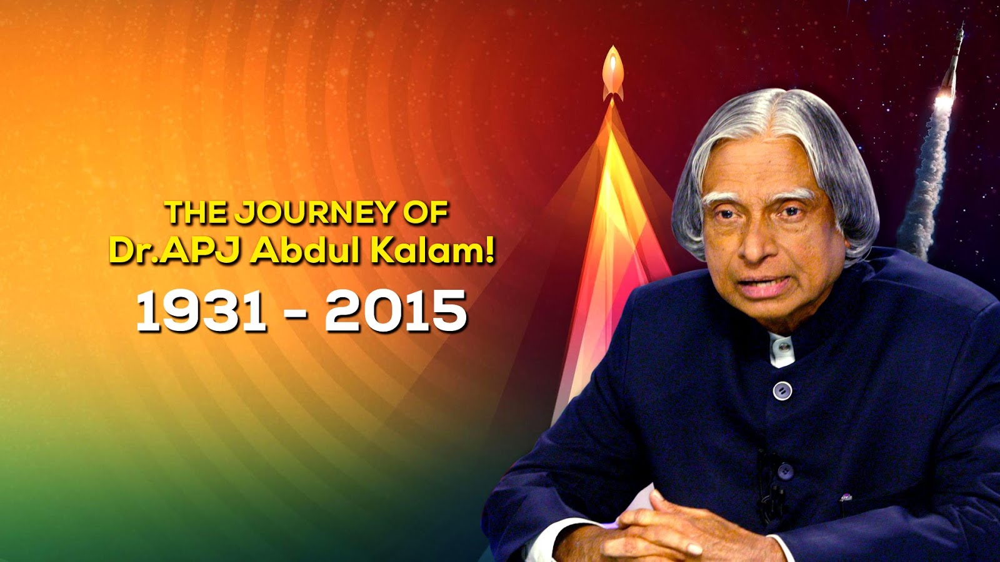

Dr. A.P.J. Abdul Kalam
" Missile Man of India "

Kalam Sir with Students
" Look at the sky. We are not alone. The whole universe is friendly to us and conspires only to give the best to those who dream and work. "
- Dr. A.P.J. Kalam
A very simple person who lived an unpretentious lifestyle. He had a keen interest in literature and wrote poems. He never married. He always faced media himself for his failures while let others address for the success. He remained active till the very end. He died while delivering a lecture at the IIM.
Dr. APJ Abdul Kalam was our extremely beloved President. He was a person genuinely loved and admired across India. Dr. Kalam is fondly remembered as a scientist and a teacher and for his contributions towards education. Dr. Kalam ignited several young
minds to think, innovate and serve. Recalling the former President on his birth anniversary in October 2015, PM Modi had said that Dr. Kalam wished to be remembered as a teacher and was well-aware of the importance of nurturing
future generations.
Dr. Kalam was blessed with an extraordinary personality. He rose from humble beginnings to the highest office. Shri Narendra Modi has respected Dr. Kalam for years. Prime Minister Modi, paying rich tributes to him has said that Dr. Kalam was first a ‘Rashtra
Ratna’ and then a ‘Rashtrapati.’
PM Modi quotes, “Dr. Kalam always wanted India to be one of the powerful nations, but not with only the prowess of weapons. He was of the opinion that a country’s image is not formed with its boundaries but how capable are it’s citizens.”
PM Modi quotes, “Dr. Kalam always wanted India to be one of the powerful nations, but not with only the prowess of weapons. He was of the opinion that a country’s image is not formed with its boundaries but how capable are it’s citizens.”